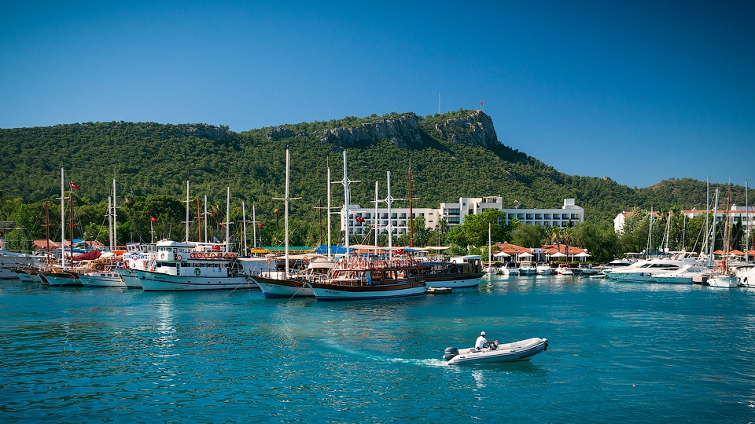

Місце народження: Київ
Дата народження: 20.05.1999
Середня освіта: спеціалізована школа №52 на інформаційних технологіях та математиці
Вища освіта: НТУУ "КПІ" ім. Ігоря Сікорського, ФІОТ, ТК, 126 інформаційні системи та технології
Кемер- курортне і портове місто на середземноморському узбережжі Туреччини, в провінції Анталія. Розташований в 42 кілометрах на північний захід від міста Анталії біля підніжжя Таврських гір, входить в так звану Турецьку рив'єру. Більш за все мені сподобалось неймовірно чисте море , та вид на високі гори, що охоплюють місто.

Сайт